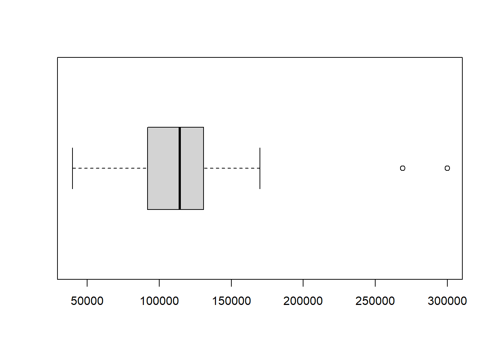

pacman::p_load("labelled", "tidyverse", "janitor", "univOutl")
veiculos = read.csv("a6_pre_processamento/veiculos_cl.csv")
veiculos = veiculos %>% clean_names()
head(veiculos)Aula 6 - Preparacao de Dados
Exercícios
Com o banco de dados veiculos_cl.csv, execute as seguintes alterações para uma eventual análise de dados:
1. Leia o arquivo e corrija o nome das variáveis.
2. Crie o dicionário de variáveis.
dicionario = veiculos %>% generate_dictionary()
dicionario3. Converta as variáveis valor e km para numérico.
veiculos$valor = veiculos$valor %>%
str_remove_all("R\\$ ") %>%
str_remove_all("\\.") %>%
str_replace_all(c("," = ".")) %>%
as.numeric()
veiculos$km = veiculos$km %>%
str_remove_all("km") %>%
as.numeric()
dicionario = veiculos %>% generate_dictionary()
dicionario4. Verifique se existe algum outlier entre os valores de revenda dos veículos.
boxplot(veiculos$valor, horizontal = T)
#Tabela com candidatos a outliers
table(veiculos$valor < quantile(veiculos$valor, .25, na.rm = T) - 1.5* IQR(veiculos$valor, na.rm = T) |
veiculos$valor > quantile(veiculos$valor, .75, na.rm = T) + 1.5* IQR(veiculos$valor, na.rm = T))
FALSE TRUE
17 3 Temos 3 candidatos à outliers.
m <- lm(veiculos$valor ~ 1)
dc <- cooks.distance(m)
table(dc > 4/nrow(veiculos))
FALSE TRUE
18 2 De acordo com o método da distância de Cook, possuímos 2 outliers. Que são os carros que estão sendo vendidos a R$299.900,00
veiculos %>%
filter(valor == 299900)5. Delete as observações 3, 7, 14 da variável km. Teste todos os métodos de imputação de dados apresentados e identifique qual deles apresenta melhores resultados.
veiculos_na <- veiculos
veiculos_na$km[c(3, 7, 14)] <- NA
##media
media <- mean(veiculos_na$km, na.rm = T)
veiculos_media <- veiculos_na
veiculos_media$km[is.na(veiculos_media$km)] = media
##hot-deck
veiculos_hd <- veiculos_na
hd <- which(is.na(veiculos_hd$km))
veiculos_hd$km[hd] <- veiculos_hd$km[hd - 1]
##moda
veiculos_moda <- veiculos_na
moda <- which(is.na(veiculos_moda$km))
veiculos_moda$km[moda] <- table(veiculos_moda$km) %>%
which.max %>%
as.numeric()
##prob de ocorrencia
veiculos_prob <- veiculos_na
id_prob <- which(is.na(veiculos_prob$km))
prob <- table(veiculos$km)/sum(table(veiculos_prob$km))
input <- sample(as.numeric(names(prob)), prob = prob)
veiculos_prob$km[id_prob] <- input
##regressao
veiculos_reg = veiculos_na
reg <- which(is.na(veiculos_reg$km))
modelo <- lm(km ~ valor + ano_modelo + tipo_de_combustivel + tipo_de_transmissao, data = veiculos_reg)
pred <- predict(modelo)
veiculos_reg$km[reg] <- pred[reg]
##resultados
comp <- rbind(summary(veiculos$km),
summary(veiculos_media$km),
summary(veiculos_moda$km),
summary(veiculos_prob$km),
summary(veiculos_reg$km))
comp <- data.frame(metodo = c("Original", "Média", "Moda", "Mais provável", "regressao"), comp)
#%>% .[, -c(2, 8)] %>% formattable()
comp